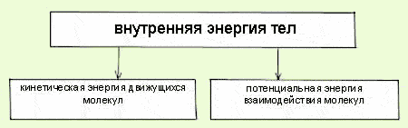

1-й закон термодинамики. Сумма кинетических энергий хаотического движения всех частиц тела относительно центра масс тела (молекул, атомов) и потенциальных энергий их взаимодействия друг с другом называется внутренней энергией.
Деление полной энергии системы на потенциальную, кинетическую, внутреннюю и т. д. зависит от формальных определений этих понятий и поэтому достаточно условно. Так, иногда во внутреннюю энергию не включают потенциальную энергию, связанную с полями внешних сил Важно, что правильность получаемых при решении конкретной задачи результатов зависит от корректности составления уравнения энергетического баланса, а не от терминологических нюансов.
ОЕдиницей мощности в СИ служит 1 ватт (Вт). 1 Вт - мощность, при которой совершается работа в 1 Дж за 1 секунду.

Воспринимаемые органами чувств человека нагрев или охлаждение макроскопического объекта есть проявления изменения внутренней энергии этого объекта. Обратное неверно: постоянство температуры объекта не означает неизменность его внутренней энергии (например, температура системы неизменна при фазовых переходах первого рода — плавлении, кипении и др.).